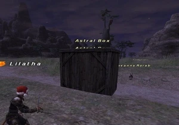

Level 75 reference · Zenith rules
|
Family: Structures |
 |

| Zone | Level | Drops | Steal | Spawns | Notes |
|---|---|---|---|---|---|
| East Ronfaure | 1 | ||||
| East Sarutabaruta | 1 | ||||
| North Gustaberg | 1 | ||||
| South Gustaberg | 1 | ||||
| West Ronfaure | 1 | ||||
| West Sarutabaruta | 1 | ||||
|
HP = Detects Low HP; M = Detects Magic; Sc = Follows by Scent; T(S) = True-sight; T(H) = True-hearing JA = Detects job abilities; WS = Detects weaponskills; Z(D) = Asleep in Daytime; Z(N) = Asleep at Nighttime | |||||

Notes:
- Appears during the Starlight Celebration 2008 event.
- Larger boxes have more hit points than smaller boxes.
- Boxes are resistant to magic.
- The first box has about 101-102 hit points.
- All Astral Boxes (at least in North Gustaberg) face east. So if you use Sneak Attack from the west, you'll always get the effect. (Tested on Sylph in North Gustaberg, with 50 times of Sneak Attacks getting the success rate of 100%)
Adapted from Eden Wiki: Astral Box · Contributors and history · CC BY-SA 4.0. Revision 44242. Layout, links and optional background text adapted for Zenith.